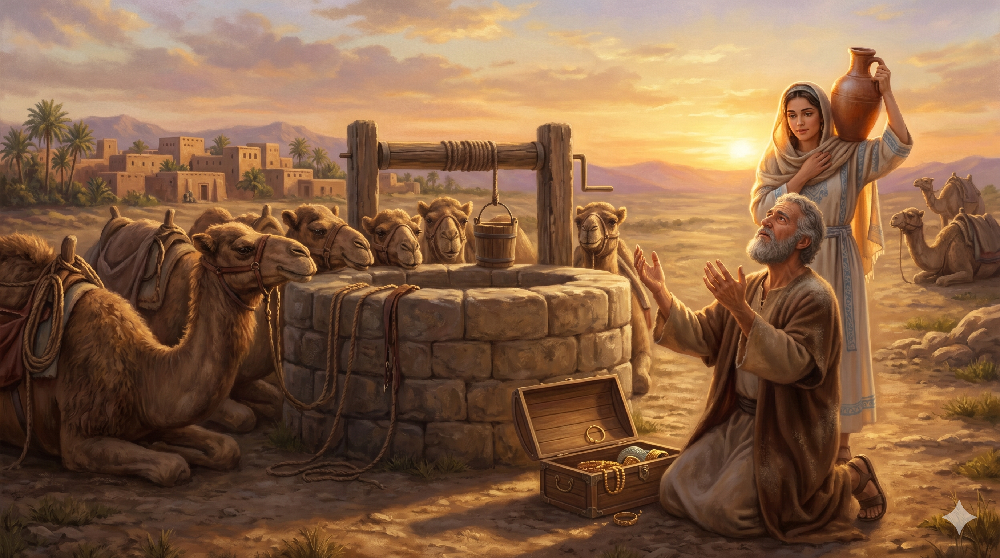

새벽녘 헤브론, 늙은 아브라함이 자신의 늙은 종 엘리에셀의 손을 자기 환도뼈 아래에 두고 엄숙히 맹세하게 하는 장면. 등잔불 곁에 세워진 지팡이, 멀리 안개 낀 가나안의 산들 — 한 시대를 마감하는 아버지의 마지막 신실한 결단.
아브라함이 나이가 많아 늙었고 여호와께서 그에게 범사에 복을 주셨더라 아브라함이 자기 집 모든 소유를 맡은 늙은 종에게 이르되 청하건대 내 허벅지 밑에 네 손을 넣으라 내가 너에게 하늘의 하나님, 땅의 하나님이신 여호와를 가리켜 맹세하게 하노니 너는 내가 거주하는 이 지방 가나안 족속의 딸 중에서 내 아들을 위하여 아내를 택하지 말고 내 고향 내 족속에게로 가서 내 아들 이삭을 위하여 아내를 택하라 … 하늘의 하나님 여호와께서 그 사자를 너보다 앞서 보내실지라 네가 거기서 내 아들을 위하여 아내를 택하리라 — 창세기 24:1–4, 7
사라가 막벨라 굴에 묻힌 뒤, 아브라함의 마음을 무겁게 누른 한 가지 일이 있었습니다 — 약속의 아들 이삭에게 약속의 가정을 잇게 하는 일이었습니다. 가나안에는 결혼할 수 있는 여인들이 많았으나, 아브라함은 거기서 며느리를 구하지 않았습니다. 가나안의 우상과 풍속이 약속의 씨에 섞이는 것을 그는 마지막까지 두려워했습니다. 그래서 자기 집의 가장 늙고 신실한 종을 불러 — 전통적으로 엘리에셀로 일컬어지는 이 사람을 — 환도뼈 아래에 손을 두고 맹세하게 합니다. 이는 단순한 약속이 아니라, 자손과 후손에 대한 가장 무거운 서약이었습니다. 약속의 다음 세대를 자기 손이 아니라 "하나님의 사자가 앞서 보내실 것"이라는 확신에 맡기는 한 노인의 결단이 거기 있습니다.
엘리에셀은 낙타 열 마리에 주인의 좋은 것들을 싣고 머나먼 메소포타미아로 떠나, 우물가에서 한 가지 기도를 드립니다. "주께서 정하신 사람을 알게 하옵소서." 그가 기도를 마치기도 전에 리브가가 물동이를 어깨에 메고 내려옵니다. 종이 한 모금의 물을 청하자 리브가는 자기뿐 아니라 낙타들에게까지 물을 길어다 줍니다. 사막에서 낙타 열 마리에게 물을 다 마시게 하려면, 한 번에 90리터 가까이 마시는 짐승을 위해 우물을 수십 번 오르내려야 합니다. 그 평범한 한 어린 여인의 친절 안에서, 하나님은 한 시대의 약속을 잇는 다음 어머니를 정확히 가리키고 계셨습니다. 약속은 화려한 표징이 아니라, 작은 친절과 기도의 응답으로 이어집니다. 아브라함은 죽기 전 마지막 신앙의 행위로 — 자기 손에 모든 것을 쥐려 하지 않고 — 하나님의 인도하심에 다음 세대를 맡겼습니다.

메소포타미아의 우물가, 무릎을 꿇고 기도하던 종 앞에 물동이를 어깨에 멘 리브가가 다가오는 황혼의 순간. 낙타들에게 물을 길어 부어 주는 그녀의 손과, 멀리 보이는 약속의 길.
우리는 평생 자녀의 진로, 결혼, 신앙을 자기 손으로 다 결정해 주려는 욕심에 시달립니다. 아브라함은 마지막에 이 욕심을 내려놓습니다. 자기가 가는 대신 종을 보내고, 종에게도 "여호와의 사자가 너보다 앞서 가신다"는 한 마디만 짐 위에 얹어 줍니다. 부모의 마지막 신앙은 자식의 길을 자기 손에 쥐는 것이 아니라, 그 길 위에 하나님의 사자가 먼저 가시도록 손을 펴는 일입니다. 오늘 당신의 자녀, 당신의 후배, 당신이 키워온 사람을 향해서도 — 더 붙들기보다는 한 번 더 기도하고, 한 번 더 맡겨 보십시오. 늦었다 싶은 그 자리에서 약속이 다시 이어집니다.
또한 한 가지 중요한 깨달음이 있습니다 — 하나님은 평범한 친절을 표징으로 사용하셨습니다. 리브가가 한 일은 기적이 아니라 그저 "낙타에게도 물을 길어다 주는 부지런한 친절"이었습니다. 어쩌면 오늘 당신의 작은 친절이 누군가의 기도에 대한 하나님의 응답일 수 있고, 어쩌면 누군가의 평범한 친절이 당신을 향한 하나님의 정확한 표징일 수 있습니다. 신앙의 안목은 큰 기적을 기다리는 것이 아니라, 일상의 작은 신실함 속에 숨어 계신 하나님의 인도를 알아보는 눈입니다.
아브라함의 마지막 신앙은 "내 손에서 다음 세대를 떼어 놓는 일"이었습니다.
당신이 끝까지 쥐고 있는 것을 한 번 펴 보십시오.
그 손이 풀어진 자리에 여호와의 사자가 먼저 가십니다.